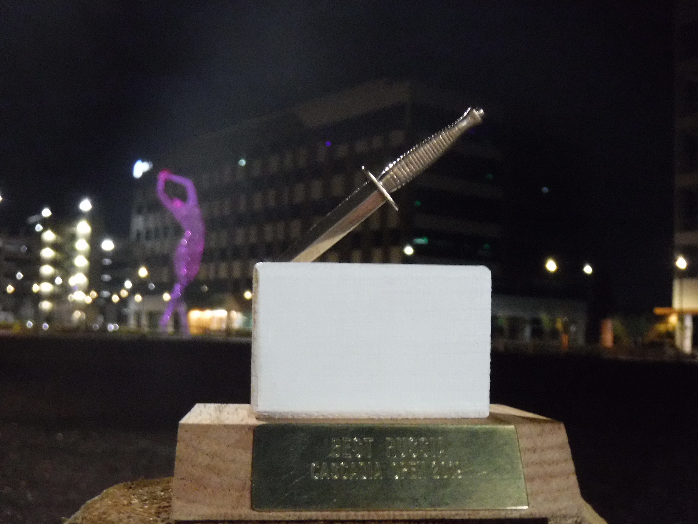
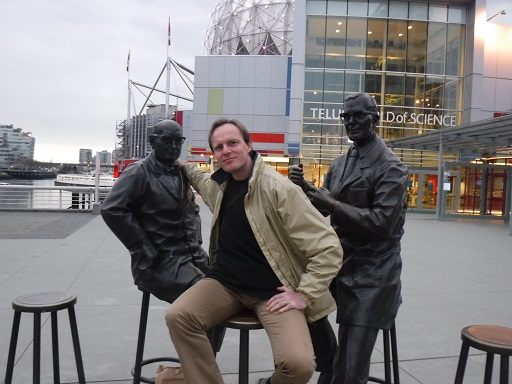
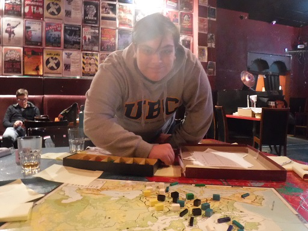

|

A tournament well played, a trophee well earned; in the background a multi-story statue that originally featured on the Burning Man festival At the start of this year I was living in the US for a few weeks of job training. As I was in the San Francisco Bay area and my weekends were free, I contacted Adam Silverman (of WDC 2016 fame) to see if he could get a Diplomacy game going. He told me he was going to Vancouver for the Cascadia Open and invited me to join and even share a hotel room on condition that there would be no snoring. I had just enough time to apply for a Canadian ETA (kind of electronic visa, ugh, formalities) and purchase a plane ticket. The venue was close to the hotel where we were staying. I got up early for a long walk through the village and its superbly big Queen's Park. (You know you're in British Columbia if all parks are either called Victoria or some related royal attribute.) Thus refreshed I arrived at the venue, the back room of a restaurant, to observe the start of the tournament. Chris Brand (the WDC 2016 champion) had put up a few screens where he'd project the game progress and standings using a program of his own fabrication. When the first round properly started, I took my leave and went for some sightseeing, given that this was my first visit to the city or to Canada in general. Having taken the metro into the center of the city close to the port, I looked for a place to eat and found a small food court with an assembly of international cuisine. Poutine is a favorite Canadian dish, or so I heard. Must try it next time. Instead I had some Russian dish of which I already forgot the name. Close enough you might say. I then started to walk towards my first goal, the famous classical Chinese Garden named after Dr. Sun Yat-Sen, first president of the Republic of China after the abolition of the Empire. The Chinese Garden was excellent, with the pond and bridge, the lampoons, the pagoda-style buildings and inner courtyard. It told the history of the Chinese population in Vancouver and it had calligraphy waterpen art to try yourself to boot. In the surrounding streets were also murals of the Chinese diaspora. With some time left I next headed for the Science Museum, a leftover of the 1986 World Expo. A fun place to spend the afternoon. Lots of interactive experiments. Even a science show for young visitors. And outside an inviting pair of statues. Time to head back to the venue for the second round.

Getting a massage from a couple of hardened intellectuals in front of the Science Museum There were lots of big draws on the first day, 2 rounds, 2 boards each. My second round game even ended in a 7-way with my 3-center Turkey holding the line with Austria and Russia against a Western Triple that got help from Italy. Some of the same people I would meet again in the final game, so it pays off to be seen neither as a major threat nor as a complete bumblebee. Poor decisions at the start and some sharp moves near the end achieved both, though I would have wished for a slightly better outcome. As both games ended after just 5 years, there was time for other games. Terraforming Mars has become the go-to game in recent years for some unfathomable reason. At least to me it seems that the negotiation aspect in this game is very low and the luck of the (card) draw fairly high, in clear contrast to Diplomacy. Might it be that contrast that makes it attractive, or does the theme touch so many hearts? Elon Musk, if you need volunteers for a trip to Mars, look no further. There were more people playing on Sunday than on Saturday, but in order to get to 3 boards 3 volunteers (Matt S., Kyra and Chris Brand himself) had to play in 2 games simultaneously. It pays off to be experienced in such a case, because time comes at a premium, especially if you want to do well on both boards. That Sunday game was a dream come true. As Russia I staved off an early stab from England on St. Petersburg, establishing domination in Scandinavia that even saw me briefly visiting Edinburgh. But my most prominent conquests were in the East. After carving up Austria, I sided with Italy for a stab on Turkey, then stabbed Italy in turn to gain a clean lead over the rest of the board. A solo was not completely out of the question, even if, unlike the previous day, there was a time limit in order to let people catch their plane, train and car rides home. However a sturdy Germany (Matt S.) and cooperative France (Kyra) professionally blocked those ambitions, apparently not burdened by the fact that they were both playing in two games.

Eli Nelson in his Diplomacy debut, playing Italy against my Russia and extremely pleased about the result; note the mercenary Turkish armies, on temporary loan to supplement a lack of wood, while their former master (Chuck Spiekerman) relaxes on the bench behind Adam Silverman won the tournament (his first), while I won best Russia with the best single game score: 13 centers with the 2nd, France, at 8 for a big sum of squares score of 55, where the second best result, Adam's Germany, stranded at 45. The elimination of Jason Mastbaum, tournament leader after the first day, in my game (where he played Austria) certainly helped Adam in his win, but he was most glad about his survival in the first game on Saturday (the round I passed up on in order to do some sightseeing), where he as England survived a Sealion and bounced back to 5 centers. Then again, it was his 1909 (final year) stab for 2 centers (net gain) on Edi that propelled him to first place. ObservationsMy handwriting must be quite illegible, as several struggled to read it. A few misorders, but not too many and none were intentional. I'm slow at writing orders, regularly letting others wait for me to finish mine. In the last part of the final game they used 2 minute dead-on-the clock deadlines to speed things up. That gets pretty hairy, especially with a high unit count. Even adding the 8 minute negotiation time (since there's hardly any negotiations in the final rounds) it's still a tough call. Of course this has more to do with the number of options that you're considering, rather than a sore writing hand. Cascadia Open results
Adam Silverman won with 89.66 points
Full placings
For further details and pictures, check out the Cascadia Open 2019 home page. Contact Chris Brand (cascadia.open@gmail.com) or write up to the Facebook event for the 2020 edition coming up really soon.
If you wish to e-mail feedback on this article to the author, and clicking
on the envelope above does not work for you, feel free to use the
|